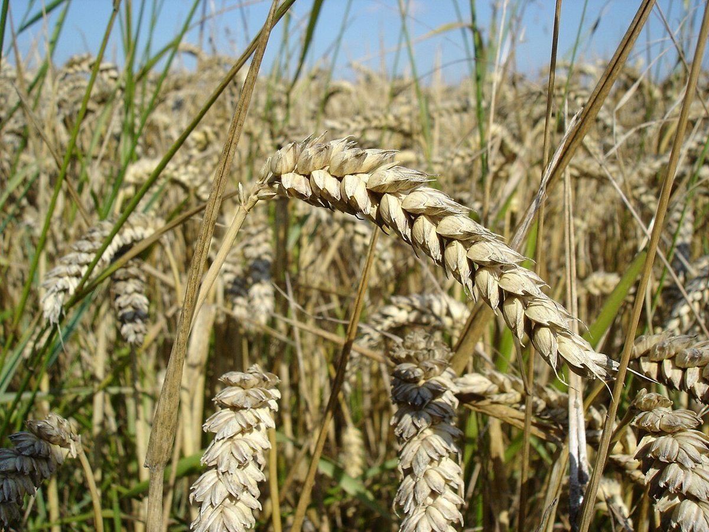

店のこと
店のこと
お店について確認できているのは、所在地・電話番号・Instagramのアカウントだけです。
このページの「想像してみる」部分は、制作側が想像して書いたものです。お店の実際の様子・考え・商品とは関係がありません。
確認できていること
- 店名は「そしがやベーカリー」、業種はベーカリー
- 所在地は鳥取県米子市米原4丁目1-8(〒683-0804)
- 電話番号は0859-57-9282
- 営業時間・定休日・メニュー・価格・ご予約・駐車場は準備中

想像してみる
網の目を一つずつ
パン屋さんと聞いて、制作側が思い浮かべた景色を、六つの網の目に並べてみました。お店の実際の品ぞろえではなく、あくまで想像です。


